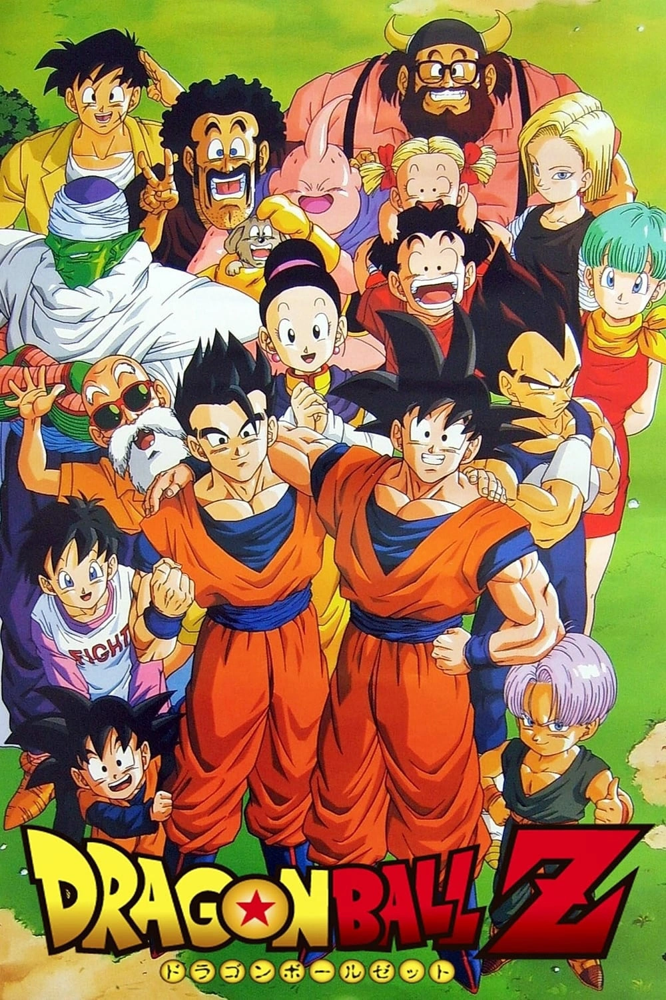
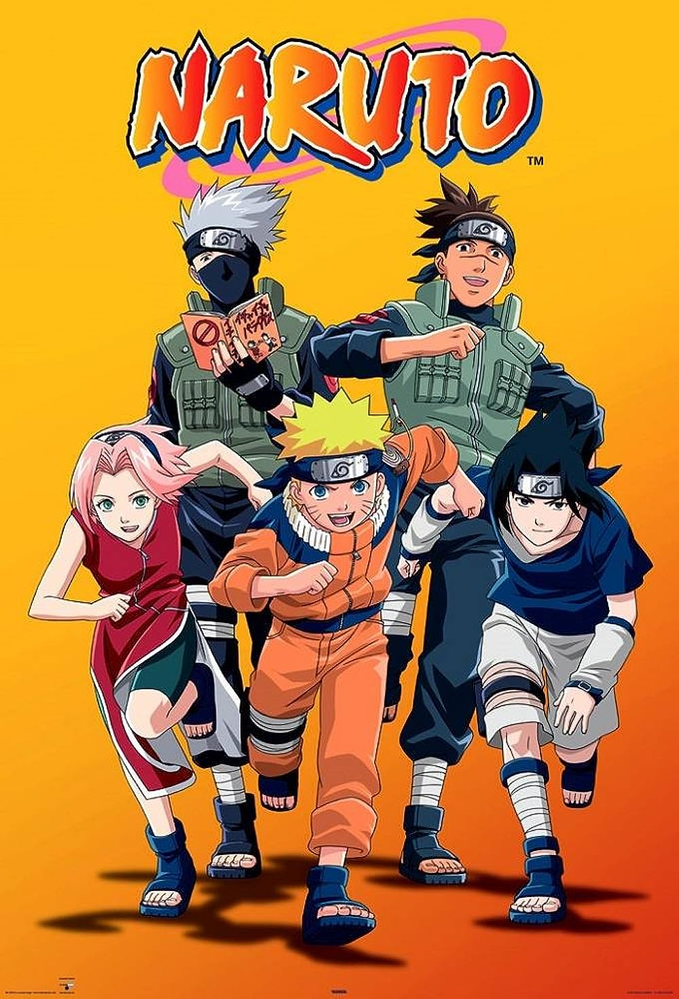
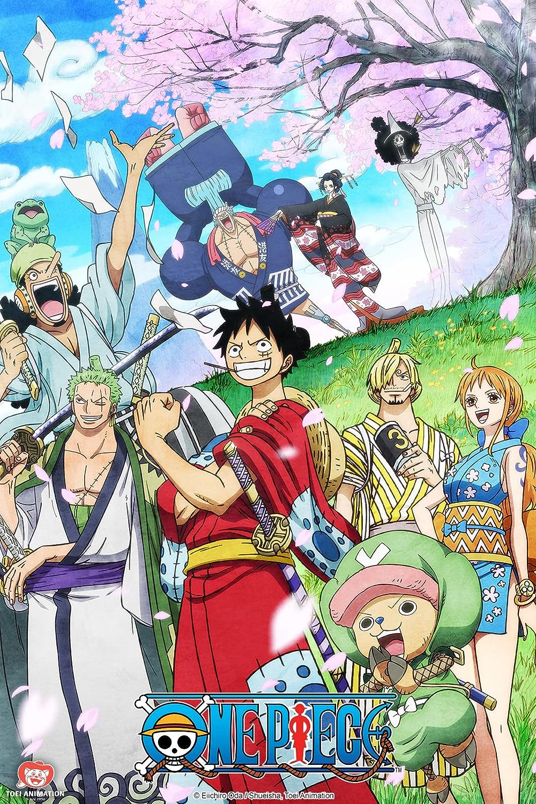

Dragon Ball Z
"Dragon Ball Z" follows the adventures of Goku, a powerful warrior and defender of Earth. The story picks up several years after the events of the original "Dragon Ball" series. Goku is now married to Chi-Chi and has a son named Gohan. However, new threats emerge in the form of powerful extraterrestrial foes, such as the Saiyans—warriors with incredible strength—and other villains with the intent to conquer or destroy Earth. The series is known for its intense battles, superhuman abilities, and the constant drive of its characters to become stronger. Goku and his friends defend Earth from numerous formidable enemies, including Frieza, Cell, and Majin Buu. Along the way, Goku learns about his true Saiyan heritage, discovers new power levels and forms, and forms close bonds with fellow warriors. The themes of friendship, determination, and the pursuit of self-improvement are central to the series. Goku's unwavering resolve to protect his loved ones and become the strongest he can be, often pushing his limits to new heights, resonates with viewers.
Naruto
The story begins with Naruto Uzumaki, a mischievous and spirited orphan living in the Hidden Leaf Village. He is an outcast due to the presence of the Nine-Tails Fox spirit sealed within him, which caused the death of the previous Hokage. Despite this, Naruto dreams of being recognized and respected by his fellow villagers.Naruto's journey begins as he enters the Ninja Academy and forms a team with his classmates Sasuke Uchiha and Sakura Haruno, under the guidance of their teacher Kakashi Hatake. Throughout the series, Naruto and his friends embark on missions, face dangerous foes, and grow stronger as ninjas.As the series progresses, Naruto discovers his connection to the Nine-Tails Fox and learns about the mysterious organization Akatsuki, which seeks to capture powerful tailed beasts like the one inside him. Naruto's determination, bravery, and unwavering desire to protect his friends and village lead him to confront his past and face powerful adversaries.
Bleach

The story begins with Ichigo Kurosaki, a high school student with the ability to see ghosts. One day, he encounters a Soul Reaper named Rukia Kuchiki, who is on a mission to eliminate evil spirits known as Hollows. In a twist of fate, Rukia transfers her Soul Reaper powers to Ichigo, granting him the abilities to fight Hollows and protect the living world.Ichigo is thrust into the world of Soul Reapers and is tasked with defending humans from Hollows and guiding souls to the afterlife. As he becomes involved in Soul Reaper affairs, he uncovers the existence of the Soul Society, an afterlife realm, and the complex hierarchy of its inhabitants. The story delves into Ichigo's training, battles, and his efforts to rescue Rukia from the Soul Society's legal system.As the series progresses, Ichigo and his friends confront more powerful adversaries, uncover dark secrets, and delve into the histories of various characters. They also face the Arrancars, Hollows with Soul Reaper powers, and the enigmatic organization known as the Espada. The plot explores themes of redemption, sacrifice, and the blurred lines between good and evil.
One Piece
The story centers around Monkey D. Luffy, a young pirate with the ability to stretch his body like rubber after consuming a supernatural fruit known as a Devil Fruit. Inspired by the legendary pirate Gol D. Roger, who left behind the "One Piece" treasure before his execution, Luffy sets out to become the Pirate King by finding the treasure and achieving his dream of adventure on the Grand Line—the most dangerous and mysterious sea in the world.Luffy assembles a diverse crew, the Straw Hat Pirates, each with their own goals and aspirations. Together, they embark on a journey across the Grand Line, encountering islands, foes, and allies in their quest for the "One Piece." The series is known for its epic battles, intricate world-building, and emotional character development.Throughout their adventures, the Straw Hat Pirates confront powerful pirate crews, government organizations, and mythical creatures. They also encounter the mysteries of the ancient weapons and the Void Century—a hidden period of history with profound implications for the world..